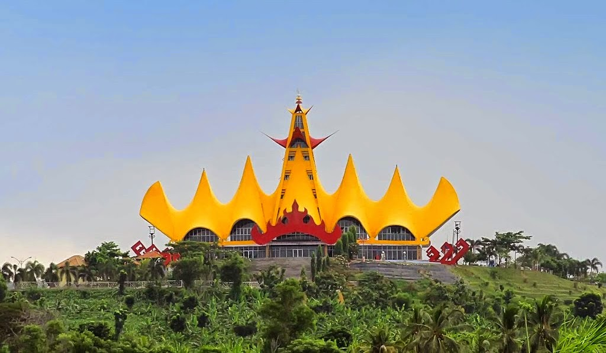
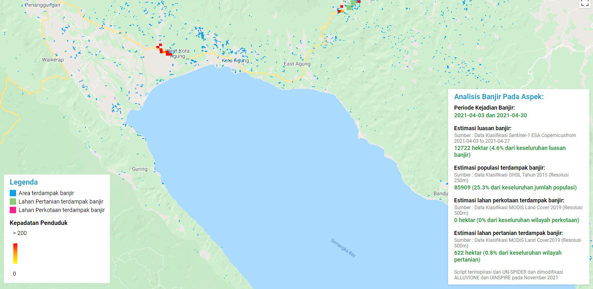
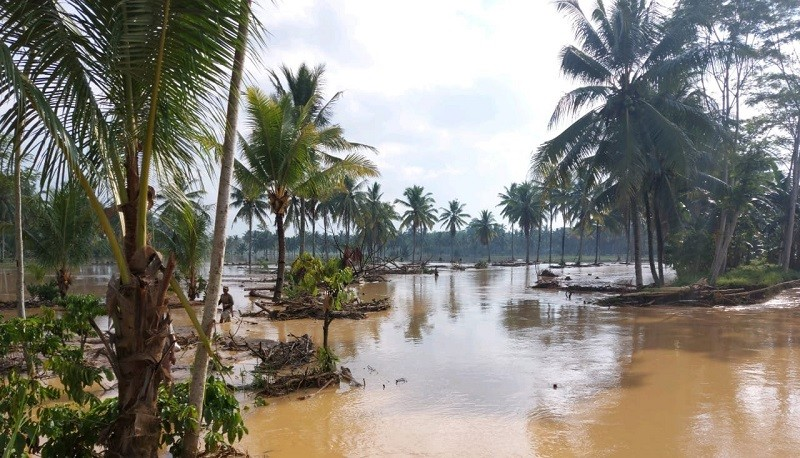
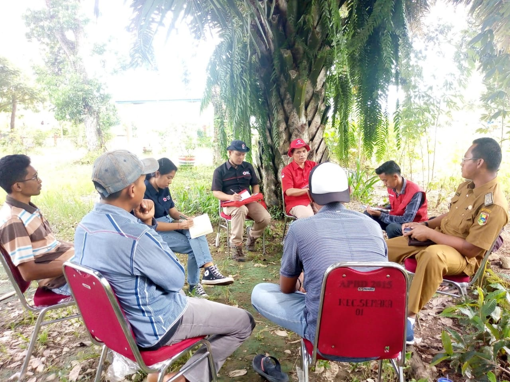
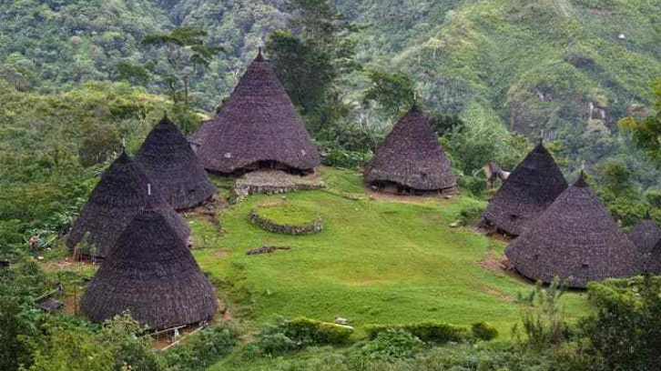
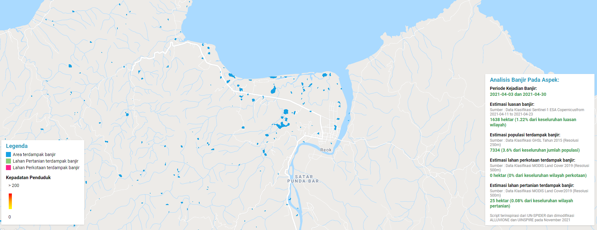
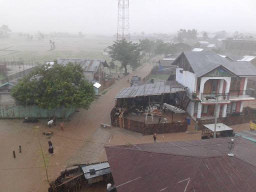
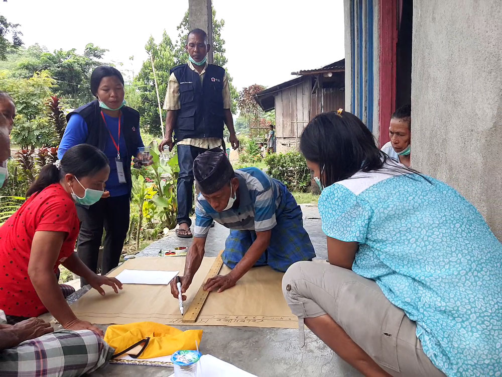

Palang Merah Indonesia supported by American Red Cross | Mid Project
Sejak Januari 2020, melanjutkan Program Pengurangan Risiko Bencana Berbasis Masyarakat atau Community based disaster risk reduction (CBDRR)
Palang Merah Indonesia (PMI) bersama Palang Merah Amerika terus membangun kapasitas masyarakat sasaran dalam mempersiapkan dan merespons bencana serta memperkuat kapasitas kelembagaan PMI dalam memberikan kebutuhan dasar melalui program Fostering Disaster-Ready Comunities throught Sustainable and Inclusive Disaster Risk Reduction (FDRCSI-DRR) atau program masyarakat siaga bencana melalui pengurangan risiko bencana berkelanjutan dan inklusif.
Project FDRCSI akan bekerja di dua provinsi, dengan melibatkan 12 komunitas. Tujuh di Kabupaten Tanggamus Provinsi Lampung dan lima di Kabupaten Manggarai Barat provinsi Nusa Tenggara Timur.
Scroll to continue
▼
Lampung
Dengan luas wilayah Provinsi Lampung sebesar 34,62 ribu kilometer persegi, maka kepadatan penduduk Provinsi Lampung pada tahun 2020 sebanyak 260 jiwa per kilometer persegi. Angka ini meningkat dari hasil SP2010 yang mencatat kepadatan penduduk Provinsi Lampung sebanyak 220 jiwa per kilometer persegi dan hasil SP2000 yang mencapai 192 jiwa per kilometer persegi.
TANGGAMUS
Analisis Google Earth Engine Alluvionne
Kabupaten Tanggamus adalah salah satu kabupaten di Provinsi Lampung, Indonesia. Ibu kota kabupaten ini terletak di Kota Agung. Kabupaten ini memiliki luas wilayah 4.654,98 Km² dan berpenduduk sebanyak 640.275 jiwa (2020) dengan kepadatan penduduk 137 jiwa/km². Badan Penanggulangan Bencana Daerah (BPBD) Kabupaten Tanggamus menyatakan ada 12 kecamatan di Bumi Begawi Jejama ini yang masuk dalam katagori rawan bencana banjir dan tanah longsor. Itu terjadi karena selain berada diwilayah perbukitan juga sungai yang berukuran besar.
Risiko Banjir
Berdasarkan kajian risiko inaRISK BNPB, kabupaten Tanggamus memiliki index risiko dengan nilai 0.083 - 0.658 yaitu rendah sampai tinggi.
Desa Dampingan di kabupaten Tanggamus
Palang Merah Amerika dan PMI telah memilih tujuh desa di kecamatan Semaka, kabupaten Tanggamus untuk implementasi berdasarkan pada kriteria yang disepakati untuk pemilihan desa terkait dengan unsur-unsur potensi cabang PMI tingkat kabupaten yang mungkin relatif lebih kondusif untuk keberhasilan koordinasi dan implementasi, sambil tetap mengakui bahwa peningkatan kapasitas cabang-cabang ini akan menjadi pusat komponen kesiapan kelembagaan dari proyek.
Pulau NTT
Wilayah administratif NTT terdiri atas 12 daerah Kabupaten/Kota. Jumlah ini terus bertambah hingga pada tahun 2019 wilayah administratif NTT terbagi atas 21 Kabupaten dan 1 Kota. Satu-satunya kota di NTT yaitu Kota Kupang, ibukota provinsi NTT yang berada bagian barat Pulau Timor. Provinsi dengan satwa endemik Komodo ini memiliki luas wilayah darat seluas 47.931,54 km2. Berdasarkan data BPS tahun 2020, jumlah populasi di Provinsi NTT mencapai 5.325.566 jiwa dengan kepadatan penduduk sebesar 111 jiwa per km2. Jika dilihat berdasarkan jenis kelamin, penduduk dengan jenis kelamin perempuan lebih tinggi daripada laki-laki terutama dengan rasio jenis kelamin di Provinsi NTT tahun 2020 sebesar 98,19 persen.
Kabupaten Manggarai
Analisis Google Earth Engine Alluvionne
Kabupaten Manggarai merupakan daerah dataran tinggi yang didominasi oleh bentuk permukaan daratan yang bergelombang dengan kemiringan lahan ≥40% (pegunungan) yaitu seluas 38,36% dan kemiringan lahan antara 15%-40% yakni seluas 55,41% dari luas wilayah Kabupaten Manggarai. Kabupaten Manggarai memiliki 12 sungai yang berpotensi banjir, dari beberapa sungai tersebut diatas pada tahun 2019 telah menyebabkan banjir dan mengakibatkan rusaknyanya fasilitas masyarakat dan fasilitas umum lainnya sejumlah 22 Kejadian.
Risiko Banjir
Berdasarkan kajian risiko inaRISK BNPB, kabupaten Manggarai memiliki index risiko dengan nilai 0.072 - 0.616 yaitu rendah sampai sedang.
Desa Dampingan di kabupaten Manggarai
Palang Merah Amerika dan PMI telah memilih lima desa di Kecamatan Reok, Kabupaten Reok. Penduduk di kabupaten ini juga menghadapi paparan yang tinggi terhadap cuaca ekstrem, kekeringan, gempa bumi, tanah longsor, banjir, wabah penyakit dan wabah, tsunami serta badai dan abrasi pantai yang ekstrem (Badan Nasional Penanggulangan Bencana, 2015).
BASELINE PROJECT
Provinsi Lampung dan Nusa Tenggara Timur di pilih berdasarkan wilayah prioritas tinggi Margaret A Cargill Philantropies (MACP) dan ditetapkan dalam kelas risiko tinggi dalam indeks pengurangan risiko nasional.
Project ini bertujuan untuk lebih membangun kapasitas masyarakat sasaran dalam mempersiapkan dan menghadapi bencana, serta untuk memperkuat kapasitas kelembagaan PMI dalam memberikan layanan manajemen risiko bencana yang penting kepada masyarakat dengan berfokus pada kesiapsiagaan bencana melalui proyek ini diharapkan bisa mengatasi beberapa kerentanan khususnya kesenjangan, ketidaksetaraan, pengucilan dan degredasi lingkungan kronis.
Berdasarkan data awal yang didapatkan melalui baseline masyarakat dan komunitas sekolah memiliki pengetahuan mengena risiko bencana yang ada di lingkungan mereka, namum masih sedikit yang tau bagaimana respon yang tepat dalam merencanakan atau bereaksi ketika bencana terjadi.
Peningkatan kapasitas di masyarakat sedikit berjalan dengan dibentuknya sibat di beberapa komunitas sasaran. Selanjutnya aktivitas yang dilakukan banyak yang berhubungan dengan respon covid-19 di area implementasi
BASELINE STUDY
'Sebaran Responden
Responden survei dasar rumah tangga FDRCSI-DRR mencakup 397 orang dewasa tersebar di 2 Kabupaten yaitu Kabupaten Manggarai sebanyak 180 orang dan Kabupaten Tanggamus sebanyak 234 orang.
Jenis Bencana yang terjadi di desa responden
Dari jenis risiko bencana yang ditanyakan, responden lebih mengetahui tindakan respon banjir yang merupakan risiko utama di wilayah sasaran, responden di Manggarai lebih paham daripada responden di Tanggamus.
Untuk bisa menyortir grafik, silahkan klik ikon gir di pojok kanan bawah grafik.
Jenis Bencana yang terjadi di desa responden (per kabupaten)
Mayoritas responden (257 responden atau 65%) mampu menyebutkan setidaknya satu potensi bahaya sedangkan 107 responden (27%) dapat menyebutkan dua potensi bahaya, 21 responden (5%) dapat menyebutkan tiga potensi bahaya dan hanya sembilan responden (2%) yang dapat menyebutkan empat potensi bahaya.
Apakah di desa responden memiliki sistem peringatan dini?
Dari total responden di kedua Kabupaten, mayoritas menyatakan tidak mengetahui apakah di desanya memiliki sistem peringatan dini.
Apakah di desa responden memiliki sistem peringatan dini? (per kabupaten)
Bila dilihat dari grafik, mayoritas responden dari kedua Kabupaten tidak mengetahui adanya sistem peringatan dini di desa mereka.
Darimana responden mendapatkan informasi peringatan dini?
Pada grafik ini, 3 respon terbesar untuk mendapatkan informasi peringatan dini adalah melalui teman, gejala alam dan HP
Darimana responden mendapatkan informasi peringatan dini? (per kabupaten)
Responden di kedua Kabupaten menyatakan tidak mengetahui darimana mendapatkan informasi peringatan dini.
Apa yang responden lakukan ketika mendapatkan info peringatan dini?
Hanya sedikit responden yang mengetahui adanya peraturan penanggulangan bencana di desa mereka, yaitu delapan orang (2%) pada semua responden, empat orang (3%) padaresponden perempuan, empat orang (2%) pada responden laki-laki, tiga orang (2%) di kalangan responden di Manggarai, dan lima orang (2%) pada responden di Tanggamus.
Apa yang responden lakukan ketika mendapatkan info peringatan dini?(per kabupaten)
Hanya sedikit responden yang mengetahui adanya peraturan penanggulangan bencana di desa mereka, yaitu delapan orang (2%) pada semua responden, empat orang (3%) padaresponden perempuan, empat orang (2%) pada responden laki-laki, tiga orang (2%) di kalangan responden di Manggarai, dan lima orang (2%) pada responden di Tanggamus.